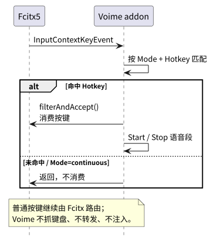
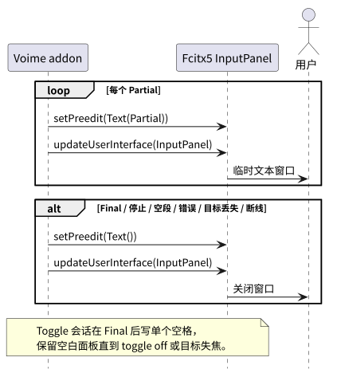
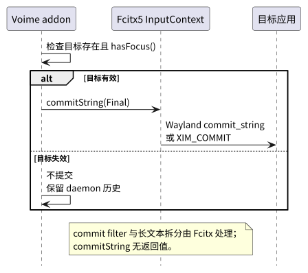

根：README USER CORE PROVIDER BUILD ｜ 本组件：README USER CORE BUILD
本文只记录 addon 实际消费的 Fcitx5 子集与本机端点边界。完整定义以 Fcitx5 官方文档为准； 消息协议见 voime-ipc USER，传输契约见 voime-transport USER。
| 术语 | 定义 |
|---|---|
| Fcitx5 | Linux 输入法框架；本项目作为 addon 运行在 fcitx5 进程内。 |
| addon | Fcitx 的可加载组件；Voime addon 在后台加载，不注册输入法条目。 |
InputContext | Fcitx 中代表一个客户端输入目标的上下文；提供 commitString、inputPanel、hasFocus。 |
InputPanel / preedit | Fcitx 输入面板；Voime 用 setPreedit 写入 Partial，由 Fcitx UI 渲染。 |
| commit string / commit filter | InputContext::commitString 提交的文本；Fcitx 的 commit filter 可能在到达客户端前转换文本。 |
| frontend | Fcitx 与客户端之间的输入协议实现，例如 Wayland text-input 或 XIM；Voime 不实现 frontend。 |
| XIM | X11 输入法协议；Fcitx XIM frontend 用于 XWayland / X11 客户端。 |
KeyList | Fcitx 的组合键表示；KeyListOption 保存 Hotkey。 |
checkKeyList | Fcitx 的按键匹配 API；使用 MatchAllNormalizedKeys。 |
TrackableObjectReference<InputContext> | 目标输入框的弱引用；目标销毁后自动失效。 |
EventLoop | Fcitx 事件循环；addon 用 addIOEvent 监听 socket，用 addTimeEvent 重连。 |
| addon ABI | voime.so 与 Fcitx5 头文件 / 库的二进制兼容性；Fcitx 大版本升级后需重新编译。 |
| 约定 | 内容 |
|---|---|
| Fcitx 版本 | 要求 Fcitx5 ≥ 5.1.23；MatchAllNormalizedKeys 与 checkKeyList 以该版本为准。 |
| addon 加载 | OnDemand=False；Fcitx 启动时后台加载，不安装 inputmethod 条目。 |
| 键盘所有权 | Fcitx 持有键盘与 frontend；Voime 不抓键盘、不转发按键、不注入按键。 |
| 热键范围 | 只有 Fcitx 能收到按键的输入上下文才触发热键；没有文本焦点、未使用 Fcitx 的窗口不保证。 |
| 热键消费 | 命中后调用 filterAndAccept；普通按键继续由 Fcitx 路由。 |
| 临时窗口 | InputPanel::setPreedit + updateUserInterface(InputPanel)；Toggle 空白窗口写单个空格。 |
| 目标输入框 | 语音段开始时聚焦的 InputContext；提交前重新检查存在与 hasFocus()。 |
| 提交 | commitString 无返回值；不保证客户端接受。Fcitx commit filter 与长文本分块由 Fcitx 负责。 |
| addon ABI | voime.so 与 Fcitx5 头文件绑定；Fcitx 大版本升级后重新编译。 |
| 配置 | Mode / Hotkey 只来自 addon 配置；socket 使用默认路径。 |
| 本地性 | 运行期所有边界调用在本机完成；模型目录、音频与 IPC 不经过网络。 |

PreInputMethod 读取事件；命中 Hotkey 后 filterAndAccept。
Partial 写入 InputPanel::setPreedit，由 Fcitx UI 渲染；Voime 不创建窗口。
InputContext::commitString；Fcitx 选择 Wayland / XIM frontend 并处理长文本。| 消费项 | 签名 / 类型 | 用途 |
|---|---|---|
| 引擎 | fcitx::InputMethodEngineV2 | addon 实例接口；不注册输入法条目，keyEvent 不参与普通输入。 |
| 按键监听 | Instance::watchEvent<EventType::InputContextKeyEvent>(EventWatcherPhase::PreInputMethod, handler) | 读取热键。 |
| 匹配 | KeyEvent::checkKeyList(keys, KeyEventMatchingMode::MatchAllNormalizedKeys) | 按 Mode 解释 Hotkey。 |
| 消费 | KeyEvent::filterAndAccept() | 阻止热键进入应用与当前输入法。 |
| 目标 | TrackableObjectReference<InputContext> | 语音段目标输入框的弱引用。 |
| 临时窗口 | InputPanel::setPreedit(Text) | 写入当前 Partial。 |
| 刷新 UI | InputContext::updateUserInterface(UserInterfaceComponent::InputPanel) | 让 Fcitx UI 重绘输入面板。 |
| 焦点检查 | InputContext::hasFocus() | 提交前确认目标仍聚焦。 |
| 配置 | Option<Mode> / KeyListOption / AddonInstance::getConfig | Mode / Hotkey。 |
setClientPreedit / updatePreedit。InputPanel；Voime 在每次 Partial 重设，停止 / Final 时清空。| 项目 | 契约 |
|---|---|
| 提交 API | InputContext::commitString(const std::string &text)。 |
| 目标 | 语音段开始时聚焦的 InputContext；失焦 / 销毁不提交。 |
| Wayland | Fcitx text-input-v3 frontend 调用 commit_string；长文本由 Fcitx 按 UTF-8 边界拆分。 |
| XWayland / X11 | Fcitx XIM frontend 使用 XIM_COMMIT；只有使用 XIM 的客户端覆盖。 |
| commit filter | Fcitx 提交过滤器生效；Voime 不绕过。 |
| 无确认 | commitString 无返回值；不承诺客户端一定接受。 |
# share/fcitx5/addon/voime.conf
[Addon]
Name=Voime
Category=InputMethod
Version=@PROJECT_VERSION@
Library=voime
Type=SharedLibrary
OnDemand=False
Configurable=True
# 不安装 share/fcitx5/inputmethod/voime.conf：Voime 不进入输入法列表。
# ~/.config/fcitx5/conf/voime.conf
Mode=ptt
Hotkey=Super+F2Mode / Hotkey；没有 Model 字段，也没有模型枚举。模型由 daemon 从固定目录加载。OnDemand=False 让 addon 在 Fcitx 启动时后台加载，从而在其他输入法活动时也能收到按键。Library=voime 对应 $PREFIX/lib/fcitx5/voime.so；CMake 关闭 lib 前缀，不能生成 libvoime.so。readAsIni / safeSaveAsIni 不会自动补 .conf，配置文件路径必须写全 conf/voime.conf。| 客户端 | 按键 / 热键 | 最终文本 | 说明 |
|---|---|---|---|
| 原生 Wayland text-input-v3 | Fcitx frontend | commit_string | 标准 Wayland 路径。 |
| XWayland / X11 XIM | Fcitx XIM | XIM_COMMIT | 只有使用 XIM 的客户端覆盖。 |
| 终端模拟器 | 取决于 text-input / XIM 支持 | 支持时同上 | 不支持输入法协议的终端不保证热键与提交。 |
| 无 text-input 的窗口 | 不可用 | 无目标 | Voime 不自行抓键盘。 |
| 无 Fcitx UI | 热键仍可用 | 仍可提交 | 临时窗口不显示；不影响文本提交。 |
| 项目 | 契约 |
|---|---|
| 端点 | 当前 Unix socket：$XDG_RUNTIME_DIR/voime/voimed.sock，未设置时 /tmp/voime-<uid>/voimed.sock。 |
| 权限 | 目录 0700、socket 0600；只允许同 UID 连接。 |
| 协议 | 换行 JSON；PROTOCOL_VERSION=4；消息与错误码见 voime-ipc USER。 |
| 读写 | 非阻塞 fd；EventLoop::addIOEvent 驱动读写；最大行 1 MiB。 |
| 目标形态 | 端点语义由 voime-transport USER 定义；C++ 前端按同一路径 / 权限契约实现。 |
| 错误 | 触发条件 | 处理 |
|---|---|---|
| Fcitx 未运行 / addon 未加载 | Fcitx 未运行或 addon 未加载。 | 无热键 / 临时窗口；日志说明。 |
| addon 描述文件缺失 / 加载失败 | 描述文件缺失或加载失败。 | 日志 / voime doctor；不消费热键。 |
| addon ABI 不匹配 | Fcitx 升级后 addon ABI 不匹配。 | 重新编译 addon；Fcitx 日志记录。 |
已有 fcitx 客户端连接 | 已有 role=fcitx 客户端连接。 | daemon 发送 Error 后断开；addon 按重连策略重试。 |
| 无法连接 daemon socket | 无法连接 socket。 | 放行热键；按重连策略重试。 |
| 提交目标失焦 / 销毁 | 目标输入框失焦或销毁。 | 清空临时窗口；Final 保留历史。 |